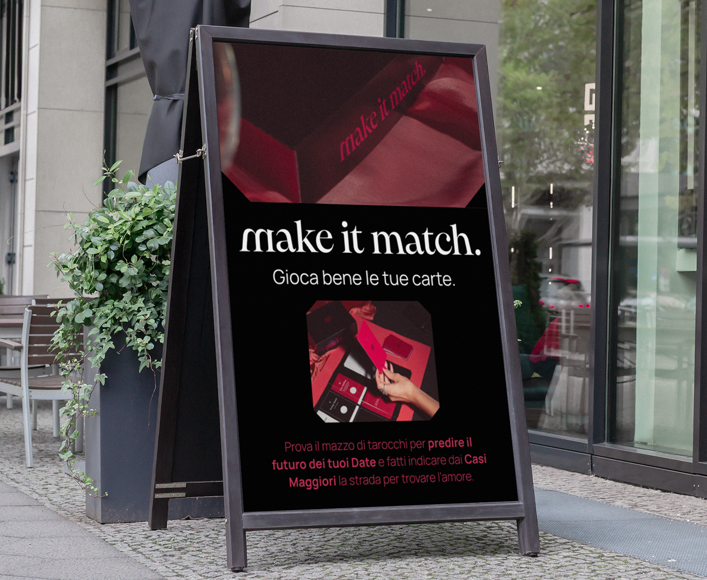
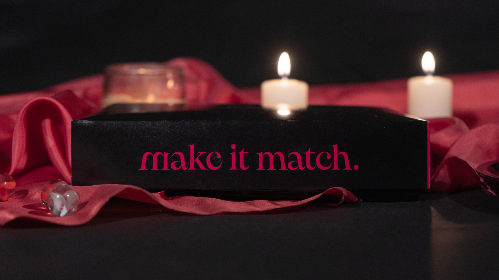
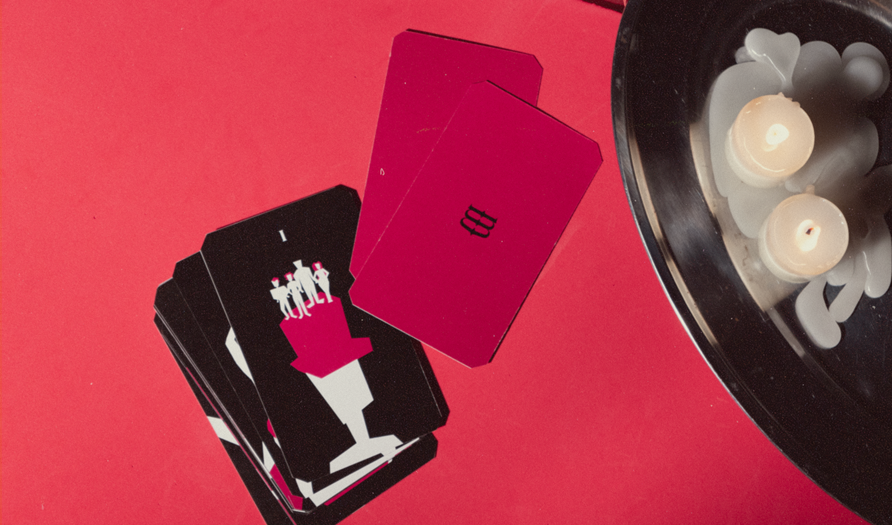
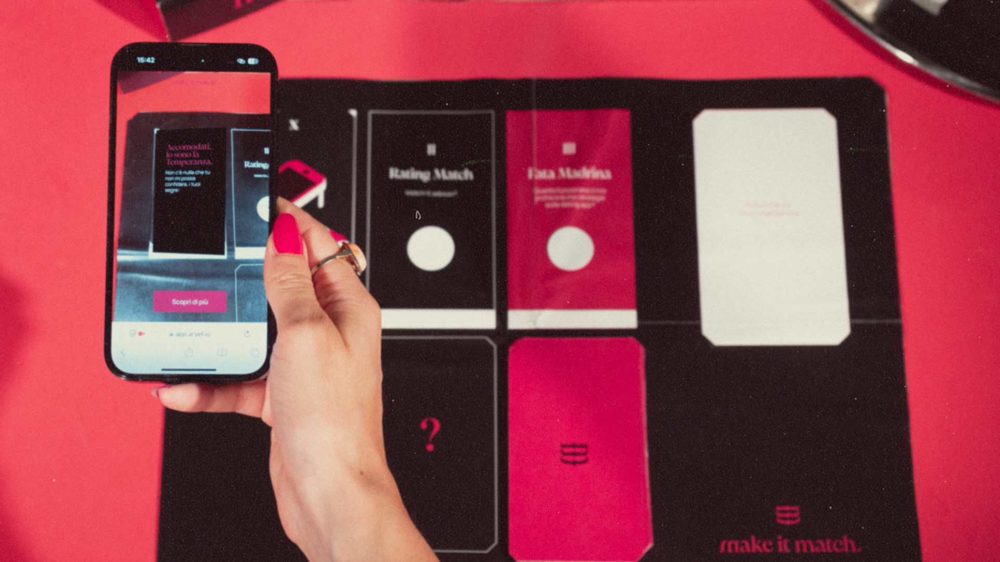

Il progetto sollecita una riflessione critica su come la dimensione affettiva, nell’era digitale, venga influenzata da logiche economiche e performative. In maniera provocatoria, Makeitmatch. utilizza supporti fisici, digital design e tecnologia AR per indagare e rendere visibile il capitalismo emotivo nascosto dietro le dating app.

I tarocchi, proprio come le dating app, sono uno strumento di introspezione, non di previsione, anche se ci piace far finta che funzionino davvero.

Le dating app si presentano con la promessa di trovarci l’anima gemella, ma attivano un meccanismo di intrattenimento e insoddisfazione continua, progettato per far sì che gli utenti vi trascorrano sempre più tempo e tornino costantemente a utilizzarle.

